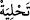

değişme yoktur. İşte bu, büyük kurtuluşun kendisidir.
“Dünya hayatında da ahirette de onlara müjde vardır.” Bu ifade, Allah’ın dostlarını
dünya ve ahiretin şerlerinden ve kötü durumlarından kurtaracağını beyan ettikten sonra
onlara vereceği dünya ve ahiret hayırlarını açıklamaktadır.
Bu cümle başlangıç cümlesidir. Sanki: “Allah’ın velileri için bunun ötesinde bir nimet
ve ikram var mıdır?” diye sorulmuş, cevaben de: “Onları hem dünyada hem de ahirette
sevindirecek şeyler vardır.” buyrulmuştur.
Allah dostları için korku ve üzüntü olmayışının önce zikredilmesi, kötülüklerden
boşalmanın ( ) iyiliklerle bezenmeden (  ) önce geldiği içindir.
“ (müjde)” kendisiyle zafer, fetih, ganimet gibi hemen elde edilecek hayırlar ile
açıklamaya ihtiyaç duyulmayan geleceğe ait hayırların müjdelendiği bir masdardır. Yâni
dünya hayatında da âhirette de müjde onlara! Yani peşin ve ertelenmiş olarak. Ya da:
Dünya hayatında olsunlar, ahiret hayatında olsunlar müjde onlara.
Hemen/dünyada olan müjdelerden birisi de iyi olarak övülmek, güzellikle anılmak ve
insanların sevgisidir. Bu izah müjdenin bizzat kastedilen peşin bir müjde olduğu
anlayışına göredir ki Ebüssuûd Efendi’nin tercihi bu yöndedir.
Dünyadaki müjde, Kur’an-ı Kerim’in birçok yerinde muttakî mü’minler için söz
konusu edilen müjdelerdir. Hz. Peygamber (s.a.)’in şöyle buyurduğu rivayet edilmiştir:
“Bu müjde, mü’minin gördüğü ya da kendisine gösterilen sâlih rüyâdır.”[58] Yani bir
müslümanın başka bir müslüman için gördüğü rüyadır. Salih rüyanın mü’minler için
müjde olmasının nübüvvet mânâsında olmadığı âşikardır. O halde bu rüya salihlik,
gafletten uyanış, ferahlama ve benzerleri için olur. Nitekim İbn Melek’in Şerhu’l-
Meşârık’ında böyle geçmektedir.
Bu müjde ancak Allah’ın velilerine nasip olur. Çünkü onlar kalbleri ve ruhları
zikrullah ve mârifetullaha garkolmuş kimselerdir. Onların uykuları uyanıklık gibidir.
Hak ve yakinden başka bir şey ifade etmez. Bu tasalar ve karanlıklar âleminin çeşitli
halleriyle başı karma karışık olan kimseye gelince, onun rüyasına güvenilemez.
et-Te’vîlâtü’n-Necmiyye’de şöyle denilmiştir: “Allah’ın velileri için peygamberlerin
hemen bir alt derecesi olan ve velilerin uyku ile uyanıklık arası gördükleri vakıalardan
ibaret müjdeler, ilham ve keşifler, kendilerine gelen mevhibe ve müşahedeler vardır.
Nitekim Hz. Peygamber (s.a.): “Peygamberlikten sadece mübeşşirât (müjdeciler/sâdık
rüyâlar) kalmıştır.”[59] buyurmuştur.
Hadiste şöyle buyrulur:
“Sâlih bir kimsenin sâdık rüyası, peygamberliğin kırk altıda biridir.”[60]
Bu hadîsin mânâsı şudur: Hz. Peygamber (s.a.) peygamber olarak gönderildiğinde
Mekke’de on üç, Medine’de ise on yıl ikamet etti. Uyanık halde iken kendisine
vahyedilme süresi yirmi üç sene, uykuda vahyedilme süresi ise bu yirmi üç senenin altı
ayıdır. Altı ay ise vahiy süresinin kırk altı cüzünden bir cüzdür. Hz. Peygamber’in
muhatap olduğu vahiy ilk olarak salih rüya şeklinde gerçekleşmiştir. Bu, meleğin vahyi